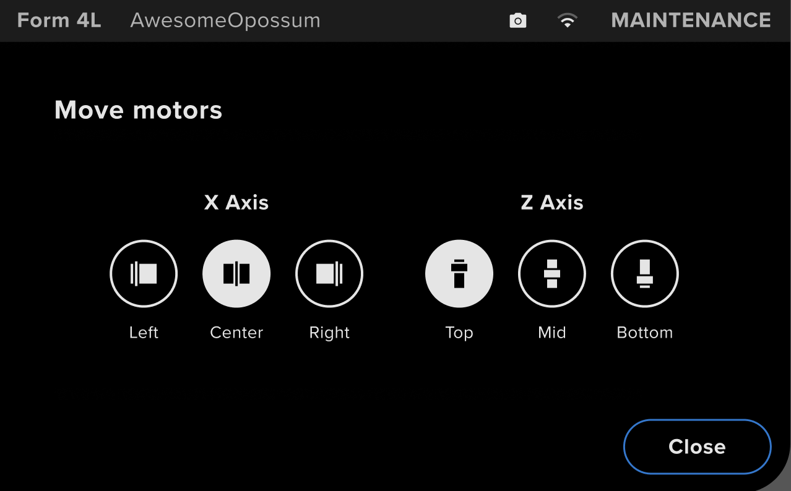
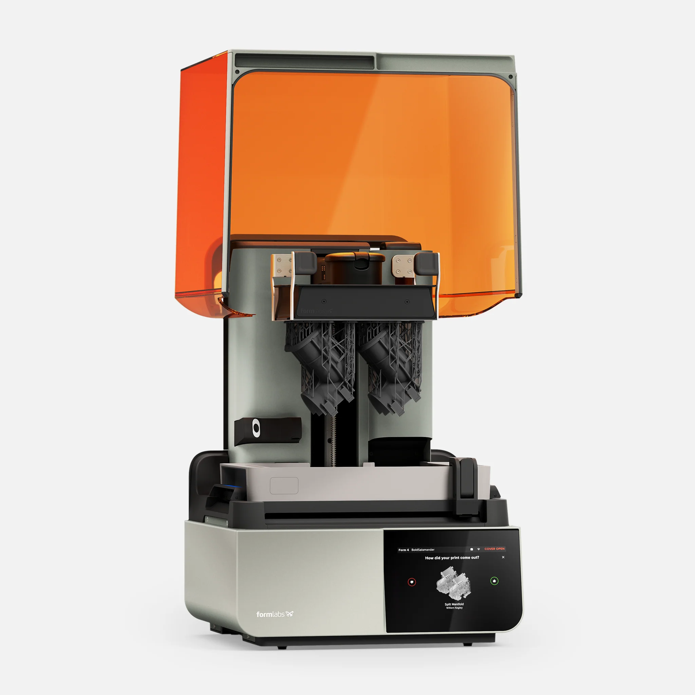
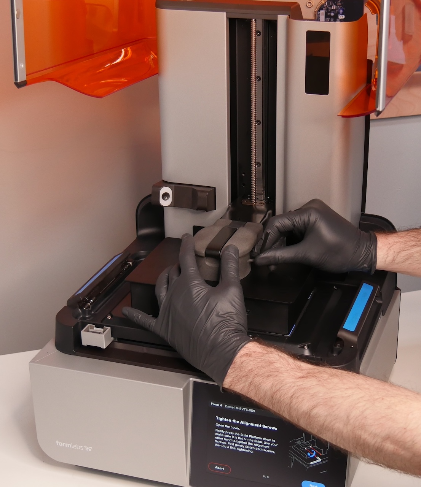

Sketches++
Independent Project
Spring 2025
Spring 2025
UI/UX, Embedded Firmware [C++]
Design Goal: Create a maintenance tool for users to manually move the motors in their 3D printer.
For my intern project, I was tasked with building an entirely new feature called Motor Moves for Formlabs' Form 4 and 4L printer line.
The goal was to allow the user to individually actuate the X/Y/Z motors in their 3D printer, allowing them access to hard-to-reach maintenance areas.
User Research Question: How extensive should the user's control be?
First, I had to determine what features would be the most useful to the user without overwhelming them with unnecessary details.
Some questions I investigated in this phase included:
7 What are the most common scenarios in which people would want to use this tool?
r Is it reasonable to expect that any user using a maintenance feature has a greater level of technical know-how than the average user?
m How complex should the user's insight into the motor's movements be? This could range from an extremely simple left / right button all the way to detailed torque and current draw graphs.
Based on these questions, I made a design decision early on to only allow the user to move the motors to a few preset locations (e.g. left, center, right), rather than giving them precise continuous control. Although the latter case was easy to implement, I deemed it unnecessarily complicated and wanted to keep things as simple as possible.
7 What are the most common scenarios in which people would want to use this tool?
r Is it reasonable to expect that any user using a maintenance feature has a greater level of technical know-how than the average user?
m How complex should the user's insight into the motor's movements be? This could range from an extremely simple left / right button all the way to detailed torque and current draw graphs.
Based on these questions, I made a design decision early on to only allow the user to move the motors to a few preset locations (e.g. left, center, right), rather than giving them precise continuous control. Although the latter case was easy to implement, I deemed it unnecessarily complicated and wanted to keep things as simple as possible.

Key Design Consideration: How can we prevent the user from injuring themselves and/or damaging the machine?
What I found most interesting about this project was the need to seamlessly switch between UI interactions and physical interactions.
Because I was designing for a (high-powered and expensive) physical system, it was crucial to communicate information to the user in a way that prevented them from
accidentally injuring themselves or damaging printer parts.
Example: The user could choose to remove both the resin tray and build platform when using Motor Moves, which would allow them to move their motors through a larger range of motion. However, the build platform had to be removed before the resin tray, because otherwise, drops of resin could drip onto the LPU (light processing unit) screen underneath, damaging it permanently. This part costs $500+ and is nontrivial to replace.
Solution: I displayed this order of operations on the UI and prevented the user from proceeding with the tool until they acknowledged it. If either the resin tray or build platform were re-inserted into the machine mid-move, I paused the motors and asked the user to remove them.
Example: The user could choose to remove both the resin tray and build platform when using Motor Moves, which would allow them to move their motors through a larger range of motion. However, the build platform had to be removed before the resin tray, because otherwise, drops of resin could drip onto the LPU (light processing unit) screen underneath, damaging it permanently. This part costs $500+ and is nontrivial to replace.
Solution: I displayed this order of operations on the UI and prevented the user from proceeding with the tool until they acknowledged it. If either the resin tray or build platform were re-inserted into the machine mid-move, I paused the motors and asked the user to remove them.


I also had to account for unexpected physical user input. Although I had tight control over the touchscreen,
I had limited insight into and control over the user's physical actions (e.g. opening the printer lid or adjusting mechanical components).
Example: Let's say the user initiates an x-axis motor movement all the way to the left. However, they forgot to remove a protruding screw in the movement path, and the motor rams into it and begins to stall.
Solution: I added an "emergency stop" action that instantly stopped all motor movements. This action could be manually initiated by the user via the UI, but it would also be automatically triggered if the motor's torque spiked unnaturally. This would prevent motor damage due to obstructions as well as potential injury due to the user's hand being pinched in the motor path.
Example: Let's say the user initiates an x-axis motor movement all the way to the left. However, they forgot to remove a protruding screw in the movement path, and the motor rams into it and begins to stall.
Solution: I added an "emergency stop" action that instantly stopped all motor movements. This action could be manually initiated by the user via the UI, but it would also be automatically triggered if the motor's torque spiked unnaturally. This would prevent motor damage due to obstructions as well as potential injury due to the user's hand being pinched in the motor path.
Implementation: Building an MVP, Prototyping, and Shipping
To actually build and ship Motor Moves within my 15-week internship, I split my time into four phases:
j Create a prototype flow in Figma and manually test it with users by directly initiating motor moves from my laptop, which was SSHed into the printer.
o Implement an MVP (using C++ and the Qt GUI framework) and perform unguided on-printer tests to identify gaps in the interaction. By testing early and often, even before I had written any UI code, I was able to quickly nail down design decisions without too much engineering investment.
c Code the rest of the tool and move it to pre-production for dogfooding (internal testing) and iteration.
r Ship the tool! Motor Moves was released as part of Form 4/4L firmware version 1.10.0 on November 26, 2024 :).
In taking this feature all the way from conception to production, I gained valuable insight into the design process and how it interacts across teams, juggling factors such as release timelines, engineering resources, product stakeholder input, etc. Additionally, I learned how to design for physical human-computer interaction, merging 2D interfaces with mechanical considerations and performing dedicated user research!
j Create a prototype flow in Figma and manually test it with users by directly initiating motor moves from my laptop, which was SSHed into the printer.
o Implement an MVP (using C++ and the Qt GUI framework) and perform unguided on-printer tests to identify gaps in the interaction. By testing early and often, even before I had written any UI code, I was able to quickly nail down design decisions without too much engineering investment.
c Code the rest of the tool and move it to pre-production for dogfooding (internal testing) and iteration.
r Ship the tool! Motor Moves was released as part of Form 4/4L firmware version 1.10.0 on November 26, 2024 :).
In taking this feature all the way from conception to production, I gained valuable insight into the design process and how it interacts across teams, juggling factors such as release timelines, engineering resources, product stakeholder input, etc. Additionally, I learned how to design for physical human-computer interaction, merging 2D interfaces with mechanical considerations and performing dedicated user research!
Note: for confidentiality purposes, I have omitted more detailed documentation such as Figma screenshots. However, I am happy to talk further about this project over online correspondence.